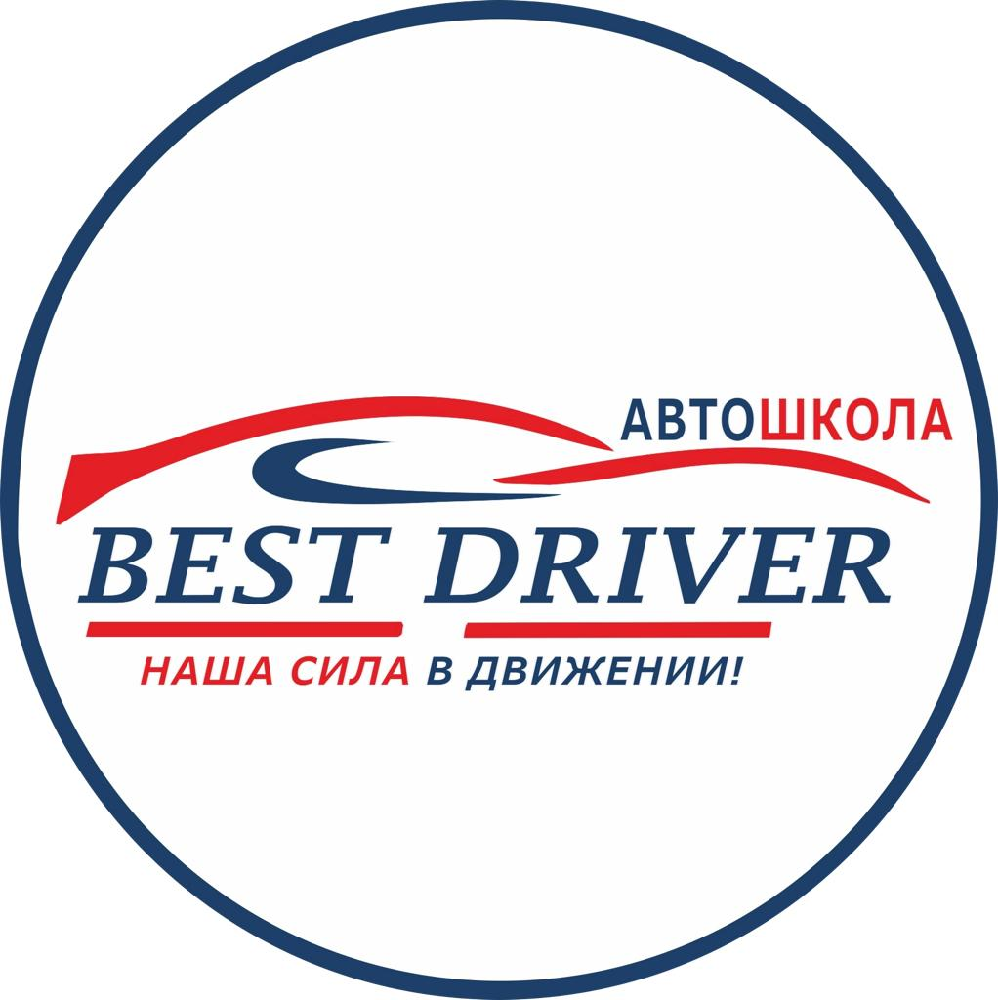

В каком случае водитель совершит вынужденную остановку?
Остановившись непосредственно перед пешеходным переходом, чтобы уступить дорогу
пешеходу.
Остановившись на проезжей части из-за технической неисправности транспортного
средства.
В обоих перечисленных случаях.
Под вынужденной остановкой подразумевается прекращение
движения ТС из-за его технической неисправности, опасности, создаваемой перевозимым грузом,
внезапным ухудшением состояния водителя (или пассажира), а также появлением препятствия на дороге
(упавший груз, завал на дороге и т. п.). Остановка, связанная с необходимостью выполнения требования
уступить дорогу, не рассматривается как вынужденная (п. 1.2 ).
1234567891011121314151617181920

Автошкола "Best Driver". Новые билеты Экзамен ПДД Кыргызстана 2022. По
вопросам обращаться 0505123553.


 ГАИ ГИБДД 2018_2019_files/none.jpg)